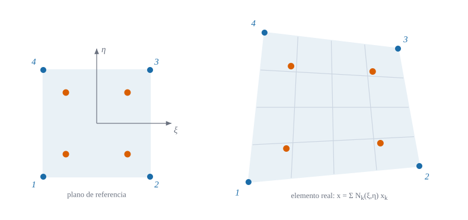

Coordenadas naturales, elemento isoparamétrico, integración de Gauss y matriz de rigidez

Figura 23.1: El plano de referencia (izquierda), un cuadrado de lado 2 con sus cuatro puntos de Gauss, se transforma en el elemento real (derecha) con las mismas funciones de forma que interpolan los desplazamientos. Esquema ilustrativo (el cuadrilátero es arbitrario).
Cómo se calcula la rigidez de un trozo de forma arbitraria si todas las fórmulas son sencillas sólo para un cuadrado
Objetivos y prerrequisitos
Objetivos. Al terminar el tema sabrás:
escribir la ley de Hooke en tensión plana y la energía de un elemento;
construir el mapa isoparamétrico\((\xi,\eta)\to(x,y)\) y su jacobiana;
obtener la matriz \(\mathbf{B}\) y la matriz de rigidez\(\mathbf{K}_e=\int\mathbf{B}^{\mathsf T}\mathbf{D}\mathbf{B}\,t\,dA\) por cuadratura de Gauss;
calcular a mano el área de un elemento con \(|\mathbf J|\);
reconocer el bloqueo por cortante parásito del cuadrilátero en flexión y por qué motiva el resto del bloque.
NotaExplicación para ingenieros: ¿por qué «isoparamétrico»?
Imagina el elemento como una goma elástica cuadrada con una cuadrícula dibujada. Para pasar al elemento real se estira esa goma hasta que sus cuatro esquinas caen sobre los nodos; las funciones de forma son la receta del estirado. Iso-paramétrico significa que se usa la misma receta para colocar los puntos del elemento (geometría) y para repartir los desplazamientos dentro de él. Ventaja práctica: basta aprender a integrar en el cuadrado perfecto; la geometría torcida sólo añade un factor, \(|\mathbf J|\).
23.1 Tensión plana
Una chapa delgada cargada en su plano tiene \(\sigma_{zz}=\sigma_{xz}=\sigma_{yz}=0\). Con \(E\) y \(\nu\), la ley de Hooke queda (tema D2):
La energía de un elemento de espesor \(t\) y área \(A_e\) es \(U_e=\tfrac12\int_{A_e}\boldsymbol\varepsilon^{\mathsf T}\mathbf D\boldsymbol\varepsilon\,t\,dA\). El desplazamiento se interpola con las funciones de forma bilineales:
Cada \(N_k\) vale 1 en su nodo y 0 en los otros tres; es el producto de las funciones lineales de E1 en cada dirección.
23.2 Mapa isoparamétrico y jacobiana
Definición 23.1 (Elemento isoparamétrico) Las coordenadas del punto \((\xi,\eta)\) del elemento se obtienen con las mismas funciones que interpolan los desplazamientos: \[
x=\sum_{k=1}^4N_k(\xi,\eta)\,x_k,\qquad y=\sum_{k=1}^4N_k(\xi,\eta)\,y_k .
\tag{23.3}\]
Las deformaciones necesitan derivadas respecto de \(x\) e \(y\), y las funciones de forma están dadas en \((\xi,\eta)\). La regla de la cadena da
Es la jacobiana del tema B1 aplicada a ecuación 23.3; \(|\mathbf J|\) es el factor de área (tema B3).
Ejemplo 23.1 (Ejemplo resuelto: el área de un elemento) Cuadrilátero de vértices \((0,0)\), \((4,0)\), \((5,3)\), \((0,2)\) mm. Agrupando los términos de ecuación 23.3: \[
x=\tfrac14(1+\xi)(9+\eta),\qquad y=\tfrac14(1+\eta)(5+\xi).
\] Derivando: \(x_{,\xi}=\tfrac14(9+\eta)\), \(x_{,\eta}=\tfrac14(1+\xi)\), \(y_{,\xi}=\tfrac14(1+\eta)\), \(y_{,\eta}=\tfrac14(5+\xi)\), de modo que \[
|\mathbf J|=x_{,\xi}y_{,\eta}-x_{,\eta}y_{,\xi}=\tfrac1{16}\bigl[(9+\eta)(5+\xi)-(1+\xi)(1+\eta)\bigr]=\tfrac14\,(11+2\xi+\eta).
\]\(|\mathbf J|>0\) en todo el cuadrado (mínimo \(\tfrac14\cdot8\)): el mapa es válido. El área es \(A=\int_{-1}^{1}\!\int_{-1}^{1}|\mathbf J|\,d\xi\,d\eta=\tfrac14\cdot11\cdot4=\mathbf{11}\) mm². Comprobación con la fórmula de los vértices: \(\tfrac12|(0)+(12)+(10)+(0)|=11\) mm². Es un resultado analítico.
¿Cuánto vale el área del cuadrilátero de vértices \((0,0)\), \((4,0)\), \((5,3)\), \((0,2)\) mm?
Fórmula de los vértices (Gauss): \(A=\tfrac12\bigl|\sum_i(x_iy_{i+1}-x_{i+1}y_i)\bigr|\), o integra \(|\mathbf J|\) del ejemplo.
\(|\mathbf J|\) debe ser positivo en todo el elemento. Un elemento cóncavo o con los nodos mal numerados (sentido horario) da \(|\mathbf J|\le0\) en algún punto y la rigidez deja de tener sentido.
Las derivadas no son las de \(\xi,\eta\).\(B\) se construye con \(\mathbf J^{-1}\); olvidarlo da una rigidez correcta sólo para cuadrados de lado 2.
23.3 Cuadratura de Gauss y matriz de rigidez
Con ecuación 23.2, las deformaciones son \(\boldsymbol\varepsilon=\mathbf B\,\mathbf d\), con, para cada nodo \(k\), \[
\mathbf B_k=\begin{pmatrix}N_{k,x}&0\\0&N_{k,y}\\N_{k,y}&N_{k,x}\end{pmatrix},\qquad
\mathbf K_e=\int_{-1}^{1}\!\!\int_{-1}^{1}\mathbf B^{\mathsf T}\mathbf D\,\mathbf B\;t\,|\mathbf J|\,d\xi\,d\eta .
\tag{23.5}\]
El integrando contiene \(\mathbf J^{-1}\), una función racional si el elemento es distorsionado: no se integra a mano, sino con la cuadratura de Gauss: se sustituye la integral por una suma de valores en puntos especiales, \[
\int_{-1}^{1}g(\xi)\,d\xi\approx g(-\tfrac1{\sqrt3})+g(\tfrac1{\sqrt3}),
\] exacta para polinomios de grado \(\le3\) con sólo dos puntos. En el cuadrado se usan \(2\times2\) puntos (los puntos naranjas de la Figura 23.1).
NotaExplicación para ingenieros: ¿por qué dos puntos de Gauss?
Es como pesar una viga con dos básculas en lugar de con mil: si el perfil de cargas es suave (un polinomio cúbico o menos), dos medidas colocadas en los sitios justos dan el resultado exacto. Los sitios, \(\pm1/\sqrt3\approx\pm0{,}577\), no son los extremos ni el centro: son los que anulan el error del primer término que sobra.
Ejemplo 23.2 (Ejemplo resuelto: un término de la rigidez de un cuadrado) Cuadrado unidad, \(E=1\), \(\nu=0{,}3\), \(t=1\). Para el nodo 1, \(N_1=(1-x)(1-y)\), \(N_{1,x}=-(1-y)\), \(N_{1,y}=-(1-x)\), y la columna de \(\mathbf B\) de \(u_1\) es \((N_{1,x},0,N_{1,y})^{\mathsf T}\). Entonces \[
K_{11}=\int_0^1\!\!\int_0^1\bigl(D_{11}N_{1,x}^2+D_{33}N_{1,y}^2\bigr)dx\,dy=\frac{D_{11}+D_{33}}3,
\] con \(D_{11}=E/(1-\nu^2)=1{,}0989\) y \(D_{33}=E/(2(1+\nu))=0{,}3846\): \(K_{11}=\mathbf{0{,}4945}\). Resultado analítico; la práctica lo reproduce con el programa completo.
En el Ejemplo 23.2, ¿cuánto vale \(K_{11}\) del cuadrado unidad con \(E=1\), \(\nu=0{,}3\) y \(t=1\)?
\(K_{11}=(1{,}0989+0{,}3846)/3=0{,}4945\).
¿Qué le ocurre a \(\mathbf K_e\) si se integra con un solo punto de Gauss?
Pierde rango: aparecen modos de energía nula además de los tres movimientos rígidos
Queda exacta, porque la deformación es constante
Se hace singular sólo si el elemento está distorsionado
Se duplica el valor de cada término
Con un punto, \(\mathbf K_e\) tiene rango 3 (las tres deformaciones constantes) frente a las 5 que debe tener (\(8-3\) movimientos rígidos): quedan 2 modos «reloj de arena» (hourglass) sin energía. Con \(2\times2\) puntos el rango es 5 (completo).
TipAplicación real: muros, vigas de gran canto y secciones óseas
ilustrativo La tensión plana es el modelo de muros de carga y de cortante, vigas de gran canto y ménsulas en edificación, y el primer paso de casi cualquier cálculo con un cuadrilátero. En biomecánica se usa para secciones planas de huesos o de un diente cargado en su plano, siempre que el espesor sea pequeño frente a las otras dimensiones. Idea de aplicación sin fuente verificada: es una orientación, no una cita.
23.4 El problema de la viga
Un buen elemento debe reproducir la flexión. Considera una viga en voladizo de \(L=20\), canto \(h=1\) y espesor \(t=1\) (\(E=1000\), \(\nu=0{,}3\)) con una carga transversal \(P=1\) en el extremo. La teoría de vigas da una flecha \(PL^3/(3EI)=32\), con \(I=th^3/12\); el cortante añade menos de un 0,2 %.
Si el cuadrilátero bilineal se integra con \(2\times2\) puntos, la flexión de la viga no se parece a la real: al deformarse como un arco, el elemento sufre un cortante \(\varepsilon_{xy}\) que no existe en flexión pura (se le llama cortante parásito). Ese cortante almacena energía falsa y la viga resulta demasiado rígida: es el bloqueo por cortante (shear locking). La práctica lo mide.
ImportanteIdea clave: la receta del libro
Si \(\varepsilon_{xy}\) se promedia (se obliga a ser constante en el elemento) en lugar de evaluarla punto a punto, el cortante parásito desaparece. Esa es la idea que reaparece en E6 y E7: no calcular las deformaciones directamente de los desplazamientos, sino reemplazarlas por promedios por subdominios.
23.5 Un poco de historia
NotaUn poco de historia: la tensión plana popularizó el nombre
El artículo de R. W. Clough «The Finite Element Method in Plane Stress Analysis», presentado en 1960 en la 2.ª Conferencia de la ASCE sobre Computación Electrónica, es el que se cita habitualmente como origen del nombre «método de elementos finitos»; los paneles triangulares y rectangulares de tensión plana ya se habían empleado en el cálculo de alas de avión por Turner, Clough, Martin y Topp en 1956. Las fuentes consultadas discrepan en los matices de prioridad.
Turner, M. J., R. W. Clough, H. C. Martin, y L. J. Topp. 1956. «Stiffness and deflection analysis of complex structures». Journal of the Aeronautical Sciences 23: 805-23.
23.6 Práctica guiada en Julia
TipEjemplo computacional
calculado (1) Un cuadrilátero de tensión plana de 15 líneas: área y \(K_{11}\) del Ejemplo 23.2. (2) La viga en voladizo con la formulación de desplazamientos y con la de promedios por subdominios (la del libro), con mallas cada vez más finas.
usingGeometria, LinearAlgebra# --- Cuadrilátero de tensión plana, 2×2 puntos de Gauss ---functionkcuad(X, E, ν, t) D = E / (1- ν^2) * [1 ν 0; ν 10; 00 (1- ν) /2] sξ = (-1, 1, 1, -1); sη = (-1, -1, 1, 1); g = (-1/sqrt(3), 1/sqrt(3)) K =zeros(8, 8); área =0.0for ξ in g, η in g dNξ = [sξ[k] * (1+ sη[k] * η) /4 for k in1:4] dNη = [sη[k] * (1+ sξ[k] * ξ) /4 for k in1:4] J = [dNξ'; dNη'] * X'# J = [x,ξ y,ξ ; x,η y,η] dN =inv(J) * [dNξ'; dNη'] # (∂x, ∂y) de cada N B =zeros(3, 8)for k in1:4 B[:, 2k-1:2k] = [dN[1, k] 0; 0 dN[2, k]; dN[2, k] dN[1, k]]end K += B'* D * B * t *det(J) área +=det(J)end (K, área)endK, A =kcuad([0.0110; 0011], 1.0, 0.3, 1.0)Kd, Ad =kcuad([0.0450; 0032], 1.0, 0.3, 1.0)(K11 = K[1, 1], área_cuadrado = A, área_cuadrilátero = Ad, movimientos_rígidos =count(<(1e-12), eigvals(Symmetric(Kd))))
# --- Viga en voladizo L=20, h=1: flecha relativa a la de Euler–Bernoulli (=32) ---functionvoladizo(nx, ny, modo; L =20.0, h =1.0, E =1.0e3, ν =0.3, t =1.0, P =1.0) r =placa_oblicua(π/2) # plano z = 0; sólo trabajan u₁, u₂ nodos, conn =malla_rectangular((0, L), (0, h), nx, ny) K, _, _ =ensamblar(r, nodos, conn, E, ν, t; modo) nn =size(nodos, 2); F =zeros(5nn) ext = [k for k in1:nn if nodos[1, k] ≈ L]for k in ext; F[gdl(k, 2)] =-P /length(ext); end fij =Int[]for k in1:nnappend!(fij, [gdl(k, 3), gdl(k, 4), gdl(k, 5)]) nodos[1, k] ≈0&&append!(fij, [gdl(k, 1), gdl(k, 2)])end u =resolver_estatica(K, F, unique(fij))-sum(u[gdl(k, 2)] for k in ext) /length(ext) / (P * L^3/ (3E * t * h^3/12))endfor (nx, ny) in ((20, 1), (20, 2), (40, 2), (40, 4))println("malla $nx×$ny desplazamientos: ", round(voladizo(nx, ny, :desplazamientos), digits =3)," subdominios: ", round(voladizo(nx, ny, :subdominios), digits =3))end
La formulación de desplazamientos sólo alcanza la flecha correcta con muchos elementos a lo largo del canto; la de subdominios acierta con pocos elementos, aunque con un solo elemento en el canto resulta algo blanda (aproximar la deformación lineal por dos escalones). Es un compromiso que se discute en E6.
23.7 Ejercicios
Funciones de forma. Comprueba que \(\sum_kN_k=1\) y que \(\sum_kN_k\,x_k\) reproduce \(x=\bar x\) en el centro si el elemento es un rectángulo.
NotaSolución
\(\sum_kN_k=\tfrac14\sum(1+\xi_k\xi)(1+\eta_k\eta)=\tfrac14\cdot4=1\) porque \(\sum\xi_k=\sum\eta_k=\sum\xi_k\eta_k=0\). En el centro \(N_k=\tfrac14\) y \(x=\tfrac14\sum x_k\) es el promedio de las abscisas, es decir, el centro del rectángulo.
Rango. ¿Cuántos autovalores nulos tiene \(\mathbf K_e\) con integración \(2\times2\) y por qué?
NotaSolución
Tres: los movimientos rígidos en el plano (dos traslaciones y un giro). Las otras \(8-3=5\) deformaciones tienen energía positiva.
Elemento distorsionado. Calcula \(|\mathbf J|\) en el centro del Ejemplo 23.1 y compáralo con \(A/4\).
NotaSolución
\(|\mathbf J|(0,0)=11/4=A/4\). En general, para un elemento bilineal, \(|\mathbf J|\) es lineal y su valor en el centro es la media: de ahí que el área se integre exactamente con un punto.
La doy por superada si…
Escribo \(\mathbf D\) de tensión plana y la energía de un elemento.
Construyo el mapa isoparamétrico y calculo \(\mathbf J\) y \(|\mathbf J|\) de un cuadrilátero concreto.
Explico por qué se usa Gauss \(2\times2\) y qué pasa con un solo punto.
Calculo un término de \(\mathbf K_e\) de un cuadrado.
Reconozco el bloqueo por cortante en flexión y sé que la solución es promediar las deformaciones.
NotaFuentes, correcciones y qué queda pendiente
Fuentes. Texto autónomo; el elemento isoparamétrico y la cuadratura de Gauss son estándar (Zienkiewicz y Taylor, s. f.; Bathe 1996; Hughes 1987) (datos editoriales sin verificar). Los resultados numéricos son calculados con Geometria.
Qué queda pendiente. La nota histórica usa fuentes secundarias; no se ha verificado el origen del elemento isoparamétrico (no se afirma); la figura tiene revisión visual pendiente; la «Aplicación real» es una orientación sin fuente.
Hughes, T. J. R. 1987. The Finite Element Method: Linear Static and Dynamic Finite Element Analysis. Prentice-Hall.
Bathe, K. J. 1996. Finite Element Procedures. Prentice Hall.
Zienkiewicz, O. C., y R. L. Taylor. s. f. The Finite Element Method. Butterworth-Heinemann.
Referencias
Son las mismas que aparecen en el margen, junto al texto.
Bathe, K. J. 1996. Finite Element Procedures. Prentice Hall.
Hughes, T. J. R. 1987. The Finite Element Method: Linear Static and Dynamic Finite Element Analysis. Prentice-Hall.
Turner, M. J., R. W. Clough, H. C. Martin, y L. J. Topp. 1956. «Stiffness and deflection analysis of complex structures». Journal of the Aeronautical Sciences 23: 805-23.
Zienkiewicz, O. C., y R. L. Taylor. s. f. The Finite Element Method. Butterworth-Heinemann.